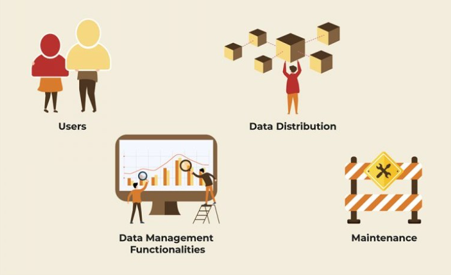

Once you've done the groundwork required to set up PIM — getting everybody on board, cleaning up your existing product data, and getting your data governance team involved — it's time to go shopping for a PIM solution.
How to choose a product information management (PIM) solution?
If you've just begun your PIM initiative, picking the right tool might be a bit overwhelming. We're here to help. Here are some questions to help you pick one perfect for your needs.
Who will use the PIM tool?
A good starting point for PIM selection is to figure out who will be using it. This can help you decide what features you need in your PIM.

1. Number of users
While some PIM systems charge by the number of users, others charge by the SKU. Therefore, the number of PIM users could be a crucial factor in decision-making. Take stock of how many users will use the PIM as soon as it is implemented, and also estimate how many more users you may add in the years to come, based on your growth plans.
2. Types of users
As many different people interact with the PIM — manufacturers, suppliers, sales managers, content managers etc. — you might need role-based permissions for different users. Can the PIM you choose restrict edit and view rights to different groups of people? If you are inviting collaborators external to the organization, how will it ensure data security? Look out for role-based access rights that can ensure data security and quality, in the PIM options you evaluate.
3. Skillsets of users
What skillsets do your PIM users have, and how much upskilling do they need to use a particular PIM solution? But, remember that regardless of which solution you choose, you will need a certain number of training hours to bring your teams up to speed. Depending on your budgets, the existing technical skills of your users, and the learning curve for each PIM solution, you will need to make a decision about the complexity of your solution.
What data management functionalities do you need?
What does your PIM need to be able to do? Here are a bunch of must-haves and nice-to-haves you may be looking for.
1. Data onboarding
Most of the data in a PIM system comes from vendors and suppliers. Onboarding this data can be cumbersome and time-consuming — with multi-level verifications, differing formats, and compliance checks for standards and regulations. A centralized onboarding PIM software can ease this process significantly. It can normalize data by creating standard templates that vendors and suppliers can directly upload their product content to. Apart from this, it can provide specific onboarding features to automate regulatory processes. If you have struggled with normalizing and consolidating information from vendors, opt for a PIM tool that provides rich onboarding features.
2. Data quality control
Product data quality is one of the top concerns facing any product business. While we've discussed how to clean your data before you even migrate it to a PIM, it is equally important that the PIM can highlight discrepancies, fix format errors on the go, and maintain data quality — especially before the information is sent downstream to a sales channel. Evaluate what kind of quality control different PIM solutions offer you. Simultaneously take a good, hard look at the handling of data in your organization, to decide how much rigor you can maintain and how much you need to offload to the tool.
3. Digital asset management
While some product data is mostly text-based, there are some products that require media-heavy content (images, videos, audio clips, etc.). Retail, manufacturing, and technology product companies, among others, often rely on high-quality images and engaging content to build brand love and loyalty. If your business requires the maintenance of rich media, you will benefit from a PIM system that comes with digital asset management capabilities.
4. Integrations
No PIM works in isolation. Ideally, a product information management system should be a central hub of product data, able to gather data from and distribute it to a variety of interconnected sources and systems — ERPs, CRMs, logistics, accounting and invoicing systems etc. If you have a larger Master Data Management / Data Governance setup, your PIM will need to interface with that as well.
Consider what systems your PIM needs to interact with, and choose one with connectors that can sync with third-party applications and databases.
5. Configurability and flexibility
Each organization has differing requirements from a PIM, and the best PIM systems can adapt to meet the current and future needs of your organization. A PIM that allows you customize your product layouts into grids, trees or hierarchies better manages your data, simplifying product catalogues and launches. As you make a choice, consider how much customization different PIM solutions offer, and also evaluate how much your requirements from PIM are likely to change over time.
What are your data distribution challenges?
Every PIM solution is expected to disseminate information to multiple systems. However, different businesses may face different challenges in data distribution, and the optimal choice of PIM will vary accordingly.
1. Downstream integrations
A basic function of PIM solutions is that they need to be able to supply various downstream channels with the required data, all the while maintaining control over the access. If your business requires a lot of such integrations, look out for sophisticated APIs to serve third-party applications outside the organization.
2. Multi-language support
One of the tougher tasks in product data management is organizing product catalogs in multiple languages, tailoring the content and launches to each region, and keeping all markets up to date simultaneously. If your business spans geographies, you'll want to ensure your product data is localization-ready, by opting for a PIM that features multi-language support.
3. Print media
Does your business feature a lot of offline marketing efforts? In some industries, marketers, sales executives, R&D and product departments need print catalogs to fuel market presence. Some PIM solutions are specialized to enable the development and export of printable content. If producing product sheets and print documents is a priority for your business, this is a capability you'll want to evaluate before selecting a solution.
4. Automated distribution
If your business manages vast amounts of product information across many channels, you may end up investing a lot of time in ensuring that the right data reaches the right destinations. You can save this time by choosing a system that can publish to sales channels without your intervention, based on preset rules. If you struggle with the operational aspects of disseminating data, evaluate your PIM solution for partial/total automation capabilities in this area.
How does the PIM solution handle maintenance?
A PIM solution is for the long haul. As you are comparing different PIM solutions, check for how each one deals with issues of maintenance and scalability.
1. Maintenance
The maintenance of your PIM will most likely include bug fixes, upgrades, and support services. Consider how much you will have to pay for upgrades — larger solutions will be more costly to upgrade but can offer more customization of features. Support levels can span all the way from a do-it-yourself help manual to a 24X7 call center setup. If your organization is new to PIM practices, be sure to choose an adequate level of support for the setup and maintenance of your tool.
2. Scalability
Thinking about PIM scalability from the get-go helps you avoid hassles years down the line. Pretty much every PIM solution offers some scalability, but they differ in the details and pricing. Some systems charge by the SKU, while additional users can be added free of charge. Others offer unlimited SKUs at a higher price point. Some also offer multiple pricing options with features that you can enable as your business grows. Choose an optimum pricing model depending on the size and nature of your business, taking into account future growth plans.
For each business, there are many criteria that could tilt the scales towards one solution or the other — make sure you know what yours are. Drawing up a detailed questionnaire before you approach PIM vendors can help you compare options in an effective way.